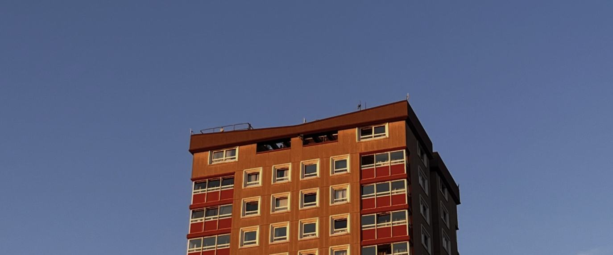

Writing
The Eurostar
The Eurostar is the Substack I write with my friend Kilian de Ridder, about current political topics, climate, energy policy and life in Hackney and Kreuzberg.

The Eurostar is the Substack I write with my friend Kilian de Ridder, about current political topics, climate, energy policy and life in Hackney and Kreuzberg.